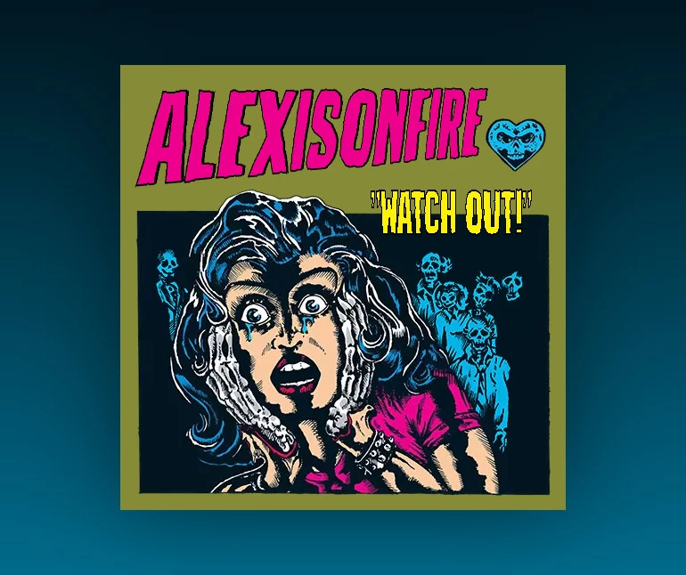

Pour cet exercice, vous devez écrire du CSS afin de recréer l’album "Watch Out!" du groupe rock canadien Alexisonfire.
Aperçu du résultat 👇

Matériel
Dossier de départ
Fonts
Lunisolar
Couleurs 🎨
#001621
#00bff5
#868b37
#ed008c
#fcf104
#000000
Médias
Illustration
Coeur
Fantôme gauche
Fantôme droit
Il est INTERDIT de modifier le HTML.
Requis de base
Téléchargez les images et placez-les dans un dossier nommé images.
Téléchargez la police d'écriture et placez-la dans un dossier nommé fonts.
Le fond doit être un dégradé allant de bleu foncé à bleu pâle avec un point d'arrêt final à 200%.
L'album doit avoir une dimension de 500x500px, être de couleur verte et avoir un ombrage de 100px égale de tout les côtés de couleur noire semi-transparente.
Utilisez la propriété transform afin de centrer l'album horizontalement et verticalement dans la fenêtre.
Avec @font-face, importez la police d'écriture Lunisolar.
Requis arrière-plan
L'illustration doit être centrée horizontalement et être positionnée à 140px du haut.
Le coeur doit être positionné à 410px de la gauche et 60px du haut.
Le fantôme gauche doit être positionné à 40px de la gauche et 205px du haut.
Le fantôme droit doit être positionné à 325px de la gauche et 210px du haut.
Requis Watch Out!
Le nom de l'album doit être positionné à 190px de la gauche et 125px du haut.
Appliquez-lui la police d'écriture Lunisolar à 70px de grosseur et de couleur jaune.
Il doit aussi avoir un contour de 2px de couleur noire.
Utilisez transform pour lui appliquer un scaleX de 50%.
Requis Alexisonfire
Le nom du groupe doit être positionné à 50px de la gauche et 30px du haut.
Appliquez-lui la police d'écriture Lunisolar à 72px de grosseur avec un style italic, un espace de lettrage de 1px et de couleur rose.
Il doit aussi avoir un contour de 1px de couleure noire et un ombrage plein de 2px vers la droite aussi de couleur noire.
Utilisez transform pour lui appliquer un scaleY de 175%, un rotateY de 15deg et un skewY de 0.5deg.
Ambiance
Notes de cours 📚
Position
static, relative, absolute, fixed, sticky